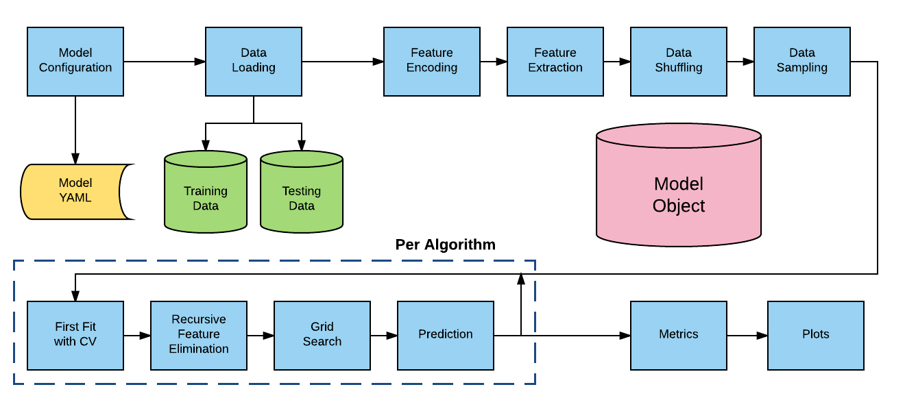

AlphaPy Pro Pipeline
{kind=link}
Overview
The AlphaPy Pro pipeline is a comprehensive machine learning framework that automates the entire workflow from data ingestion to model deployment. The pipeline is designed to be flexible, supporting various algorithms and techniques while maintaining consistency and reproducibility.
Pipeline Architecture
The AlphaPy Pro pipeline consists of several key stages:
Configuration Loading - Read model parameters from YAML files
Data Ingestion - Load training and testing data
Feature Engineering - Transform and create features
Feature Selection - Select the most informative features
Model Training - Train multiple algorithms with hyperparameter tuning
Model Evaluation - Assess model performance with various metrics
Ensemble Creation - Blend predictions from multiple models
Visualization - Generate plots for model interpretation
Output Generation - Save models, predictions, and artifacts
Model Configuration
AlphaPy Pro uses YAML configuration files to control every aspect of the pipeline. The configuration is hierarchical and includes sections for:
Project Settings - Directory paths, file formats, submission options
Model Parameters - Algorithms, cross-validation, scoring metrics
Data Processing - Feature selection, sampling, transformations
Feature Engineering - Encoding, interactions, clustering, dimensionality reduction
Pipeline Settings - Parallelization, random seeds, verbosity
Example configuration snippet:
model:
algorithms: ['CATB', 'LGB', 'XGB', 'RF', 'LOGR']
cv_folds: 5
grid_search:
option: True
iterations: 50
random: True
scoring_function: roc_auc
type: classification
Supported Algorithms
Classification Algorithms:
CatBoost (CATB) - Gradient boosting with categorical feature support
LightGBM (LGB) - Fast gradient boosting framework
XGBoost (XGB) - Extreme gradient boosting
Random Forest (RF) - Ensemble of decision trees
Logistic Regression (LOGR) - Linear classification model
Extra Trees (EXT) - Extremely randomized trees
Support Vector Machine (SVM) - Maximum margin classifier
K-Nearest Neighbors (KNN) - Instance-based learning
Regression Algorithms:
CatBoost Regressor - Gradient boosting for regression
LightGBM Regressor - Light gradient boosting regressor
XGBoost Regressor - XGBoost for continuous targets
Random Forest Regressor - Ensemble regression
Linear Regression - Standard linear model
Ridge/Lasso - Regularized linear models
Feature Engineering
AlphaPy Pro provides extensive feature engineering capabilities:
Automatic Feature Generation:
Clustering Features - K-means clustering with configurable clusters
Interaction Features - Polynomial feature interactions
Count Features - Value counts and frequency encoding
Date/Time Features - Extract temporal components
Text Features - TF-IDF and count vectorization
Statistical Features - NumPy/SciPy transformations
Encoding Options:
Target Encoding - Mean target encoding with smoothing
One-Hot Encoding - Binary columns for categories
Ordinal Encoding - Integer encoding for ordinal data
Binary Encoding - Efficient binary representation
Dimensionality Reduction:
PCA - Principal Component Analysis
ISOMAP - Isometric mapping
t-SNE - t-distributed Stochastic Neighbor Embedding
Feature Selection
Multiple feature selection methods are available:
- Univariate Selection:
Statistical tests to select features based on univariate metrics (f_classif, mutual_info_classif, chi2, etc.)
- LOFO Importance:
Leave One Feature Out importance analysis to identify features that contribute most to model performance
- Recursive Feature Elimination (RFE):
Iteratively remove features based on model coefficients
- Variance Threshold:
Remove low-variance features
Model Training
The training process includes:
Data Splitting - Stratified train/validation splits
Cross-Validation - K-fold CV with configurable folds
Hyperparameter Tuning - Grid search or random search
Model Fitting - Parallel training of multiple algorithms
Calibration - Probability calibration (Platt/Isotonic)
Example training output:
[2025/06/18 20:45:45] INFO Training CATB
[2025/06/18 20:45:46] INFO CV Score: 0.9158 [+/- 0.0234]
[2025/06/18 20:45:47] INFO Training LGB
[2025/06/18 20:45:48] INFO CV Score: 0.9944 [+/- 0.0012]
[2025/06/18 20:45:49] INFO Training XGB
[2025/06/18 20:45:50] INFO CV Score: 0.8171 [+/- 0.0156]
Model Evaluation
Comprehensive evaluation metrics for different problem types:
Classification Metrics:
Accuracy, Precision, Recall, F1-Score
ROC-AUC, Average Precision
Matthews Correlation Coefficient
Cohen’s Kappa
Log Loss, Brier Score
Regression Metrics:
Mean Absolute Error (MAE)
Mean Squared Error (MSE)
Root Mean Squared Error (RMSE)
R-squared (R²)
Mean Absolute Percentage Error (MAPE)
Ensemble Methods
AlphaPy Pro automatically creates ensemble models:
- Blending:
Combines predictions from multiple models using a meta-learner (Logistic Regression for classification, Ridge for regression)
- Voting:
Simple or weighted voting across models
- Stacking:
Multi-level stacking with cross-validated predictions
Visualization
The pipeline generates various plots for model interpretation:
- Calibration Plot
Shows reliability of predicted probabilities
{kind=link}
- Confusion Matrix
Visualizes classification errors by class
{kind=link}
- Feature Importance Plot
Shows relative importance of features
{kind=link}
- Learning Curve
Displays training/validation scores vs. sample size
{kind=link}
- ROC Curve
Receiver Operating Characteristic curve for binary classification
{kind=link}
- LOFO Importance Plot
Leave One Feature Out importance analysis
Output Structure
All outputs are saved in timestamped run directories:
runs/run_YYYYMMDD_HHMMSS/
├── config/
│ └── model.yml # Configuration snapshot
├── input/
│ ├── train.csv # Training data snapshot
│ └── test.csv # Test data snapshot
├── model/
│ ├── model.pkl # Trained model ensemble
│ ├── feature_map.pkl # Feature transformation pipeline
│ └── model_metrics.csv # Performance metrics
├── output/
│ ├── predictions.csv # Raw predictions
│ ├── ranked_*.csv # Ranked predictions
│ └── submission.csv # Competition submission file
└── plots/
├── *.png # All generated plots
└── ...
Advanced Features
- Meta-Labeling:
Triple Barrier Method for financial ML applications
- Time Series Support:
Lag features, rolling statistics, and proper CV splits
- GPU Acceleration:
Automatic GPU usage for XGBoost, LightGBM, and CatBoost
- Distributed Training:
Support for distributed training on clusters
- AutoML Integration:
Automated feature engineering and model selection
Best Practices
Start Simple - Begin with a few algorithms and basic features
Iterate Quickly - Use small grid search iterations initially
Monitor Overfitting - Watch train/validation score gaps
Feature Engineering - Spend time on domain-specific features
Ensemble Wisely - Combine diverse models for best results
Track Experiments - Use the timestamped runs for comparison
For specific domain applications, see:
MarketFlow - Financial market analysis and trading strategies